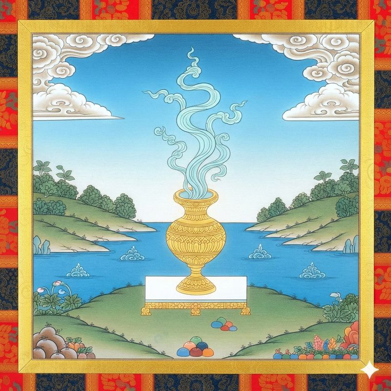

甘露妙瓶
吉凶：吉
方位：北下
← 返回占卜首頁

卦辭
猶如瓶中盛滿甘露，成辦息業必定成功。
表示因享用甘露而與死神永別。
詳細解讀
家庭和生命
滿門吉慶。
謀略與籌劃
無有險阻，萬事亨通，但應隨意修一上師法。
財運
不招自來，定可獲取收益，如同妙瓶自然生出一切所欲。
怨敵
無有怨敵，且均持寂靜調柔心態。
行旅之人
一路順暢，且急緩有度。
疾病
若作治療、經懺等，則一切所作皆化為甘露，對患者尤其有利。無有魔障。
修法
若作息業等，則可保成功吉祥。依止普明佛等除障本尊、藥師佛、不動佛等則善妙。
丟失物
可前往南方或湖畔搜尋。
來客及成事
萬無一失。
其他諸事
做溫和事業時機適宜，若做下毒等惡業則絕對失敗，應趁早放棄打算。
修持建議
作水施、寶瓶沐浴、超度、懺悔、凈障等，則一切違緣均可消失。此卦為祝福洋溢，息業增上之卦。
← 返回占卜首頁